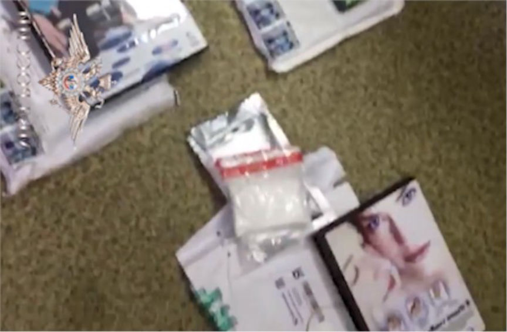
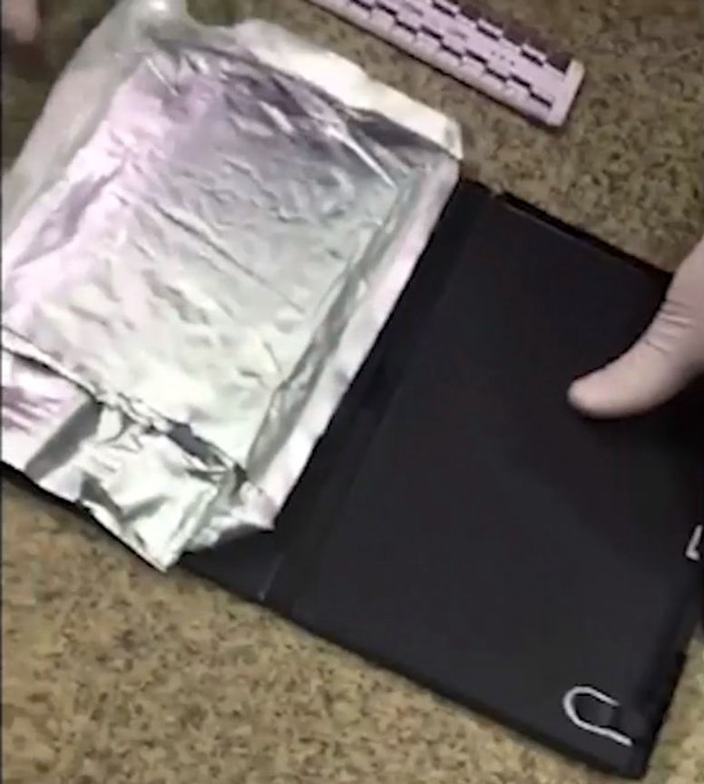
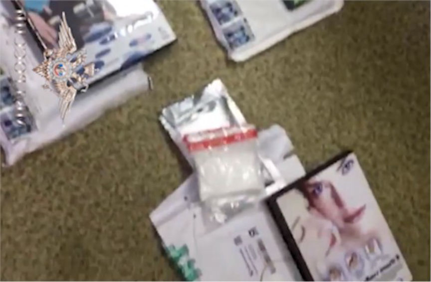
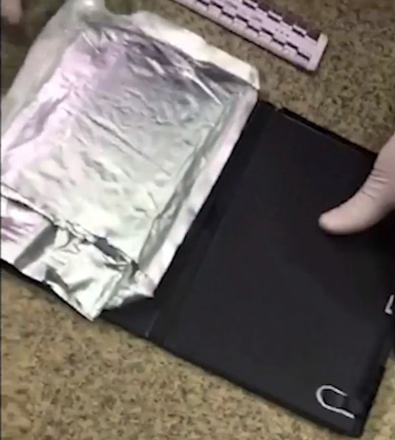

Russia: Massive Darknet Drug Operation Underway
Russian law enforcement conducted a massive operation against darknet drug trafficking sites. They utilized photo uploading sites and identified more than 20 darknet sites this year. They have seized 118kg of various illegal substances as well.
I do not have time to translate this currently. Help would be appreciated if anyone can read Russian with ease.
Press Release Link: MOS.ru
In the course of a complex of operational-search activities and investigative actions, the activity of the criminal community engaged in the distribution of wholesale shipments of amphetamine-type drugs, cannabinoids, cocaine, and LSD by secret police officers was suppressed by officers of the Main Directorate for Drug Control of the Ministry of Internal Affairs of Russia and the Main Directorate of the Ministry of Internal Affairs of Russia in Moscow. bookmarks through an online store located in the Darknet network.

Pursuing the goal of large-scale distribution of narcotic drugs and psychotropic substances on the territory of the Russian Federation, members of the community, created no later than August 2015, committed at least 30 grave and especially serious crimes within the framework of territorially and functionally separate structural divisions. The criminal activity of the community was extended to the territories of the Moscow region, Bryansk, Tula, Yaroslavl regions of the Russian Federation. The criminal community at different times of its existence included 8 people. According to available data, the sale of drugs was carried out by wholesale consignments from 10 to 20 kg through caches-bookmarks.

During the searches in the premises used by the detainees, as well as when seizing the contents of the cache-caches they organized, more than 118 kg of various drugs were found for a total of more than 113 million rubles at the prices of the “black market”. Established bank accounts, e-commerce numbers of detainees, revealed the facts of money laundering for a total of 2.9 million rubles. In the course of the investigation of crimes committed by the drug group, criminal cases were opened in February 2018 under part 1 and part 2 of Art. 210 of the Criminal Code. In the third quarter of 2018, it is planned to send a criminal case to court.
According to experts from the Department of Regional Security and Anti-Corruption of Moscow, recently a wave of Internet sales of drugs and other drugs banned to free circulation has swept the Russian territory. In order to identify OPG involved in this illegal activity, on a regular basis, the Internet, Internet traffic, Internet resources are monitored. 10 photohostings are sent to control, through which photo information is exchanged from the “mortgage” to the “consumer”, as well as two Internet messengers through which information is exchanged from the “mortgage” to the “dispatcher”. The analysis of Internet sessions of IP-addresses was carried out in order to establish the devices used to exchange information, their IP-addresses, their possible location. In the framework of operational development, figurants are practiced, Procurement for further distribution of prohibited substances through online stores. Taking into account the specifics of the exchange of funds between the private owners of criminal groups, as well as drug users, an analysis of bitcoin-purses of detained persons is conducted with the aim of establishing their criminal ties. As a result, the most widespread and popular bitcoin exchanges are established. In total, in the first half of the year 2018, 21 Internet sites were identified, used by active participants in liquidated drug addicts for the acquisition of narcotic drugs and psychotropic substances and their subsequent sale in Moscow. In the course of the complex of operational-search, operational and technical measures, activities were stopped by an organized criminal group engaged in the distribution of narcotic drugs through online stores, such as amphetamine, mephedron, and hashish. Subdivisions of the Main Directorate of the Ministry of Internal Affairs of Russia for Moscow, including in the framework of operational development, detained 18 persons, who seized about 4.5 kg of prohibited substances. Significant work in this direction was carried out by the Office for Control over the Traffic of Narcotic Drugs of the Main Directorate of the Ministry of Internal Affairs of Russia for Moscow, the Internal Affairs Directorate for the CAO, CAO, TIEN, SEAD, ZelOAO.
In general, in the first half of 2018 in Moscow, the number of crimes in the sphere of illegal distribution of narcotic drugs increased by 4.6%. The share of cases in the total number of cases revealed was 49%. 3 373 people were brought to criminal responsibility, 570 kg of drugs were seized, including 104.7 kg of heroin.
I do not have time to translate this currently. Help would be appreciated if anyone can read Russian with ease.
Press Release Link: MOS.ru
In the course of a complex of operational-search activities and investigative actions, the activity of the criminal community engaged in the distribution of wholesale shipments of amphetamine-type drugs, cannabinoids, cocaine, and LSD by secret police officers was suppressed by officers of the Main Directorate for Drug Control of the Ministry of Internal Affairs of Russia and the Main Directorate of the Ministry of Internal Affairs of Russia in Moscow. bookmarks through an online store located in the Darknet network.

DVD Cases in Russian Drug Bust
Pursuing the goal of large-scale distribution of narcotic drugs and psychotropic substances on the territory of the Russian Federation, members of the community, created no later than August 2015, committed at least 30 grave and especially serious crimes within the framework of territorially and functionally separate structural divisions. The criminal activity of the community was extended to the territories of the Moscow region, Bryansk, Tula, Yaroslavl regions of the Russian Federation. The criminal community at different times of its existence included 8 people. According to available data, the sale of drugs was carried out by wholesale consignments from 10 to 20 kg through caches-bookmarks.

Russian DVD Cases in Drug Bust
During the searches in the premises used by the detainees, as well as when seizing the contents of the cache-caches they organized, more than 118 kg of various drugs were found for a total of more than 113 million rubles at the prices of the “black market”. Established bank accounts, e-commerce numbers of detainees, revealed the facts of money laundering for a total of 2.9 million rubles. In the course of the investigation of crimes committed by the drug group, criminal cases were opened in February 2018 under part 1 and part 2 of Art. 210 of the Criminal Code. In the third quarter of 2018, it is planned to send a criminal case to court.
According to experts from the Department of Regional Security and Anti-Corruption of Moscow, recently a wave of Internet sales of drugs and other drugs banned to free circulation has swept the Russian territory. In order to identify OPG involved in this illegal activity, on a regular basis, the Internet, Internet traffic, Internet resources are monitored. 10 photohostings are sent to control, through which photo information is exchanged from the “mortgage” to the “consumer”, as well as two Internet messengers through which information is exchanged from the “mortgage” to the “dispatcher”. The analysis of Internet sessions of IP-addresses was carried out in order to establish the devices used to exchange information, their IP-addresses, their possible location. In the framework of operational development, figurants are practiced, Procurement for further distribution of prohibited substances through online stores. Taking into account the specifics of the exchange of funds between the private owners of criminal groups, as well as drug users, an analysis of bitcoin-purses of detained persons is conducted with the aim of establishing their criminal ties. As a result, the most widespread and popular bitcoin exchanges are established. In total, in the first half of the year 2018, 21 Internet sites were identified, used by active participants in liquidated drug addicts for the acquisition of narcotic drugs and psychotropic substances and their subsequent sale in Moscow. In the course of the complex of operational-search, operational and technical measures, activities were stopped by an organized criminal group engaged in the distribution of narcotic drugs through online stores, such as amphetamine, mephedron, and hashish. Subdivisions of the Main Directorate of the Ministry of Internal Affairs of Russia for Moscow, including in the framework of operational development, detained 18 persons, who seized about 4.5 kg of prohibited substances. Significant work in this direction was carried out by the Office for Control over the Traffic of Narcotic Drugs of the Main Directorate of the Ministry of Internal Affairs of Russia for Moscow, the Internal Affairs Directorate for the CAO, CAO, TIEN, SEAD, ZelOAO.
In general, in the first half of 2018 in Moscow, the number of crimes in the sphere of illegal distribution of narcotic drugs increased by 4.6%. The share of cases in the total number of cases revealed was 49%. 3 373 people were brought to criminal responsibility, 570 kg of drugs were seized, including 104.7 kg of heroin.